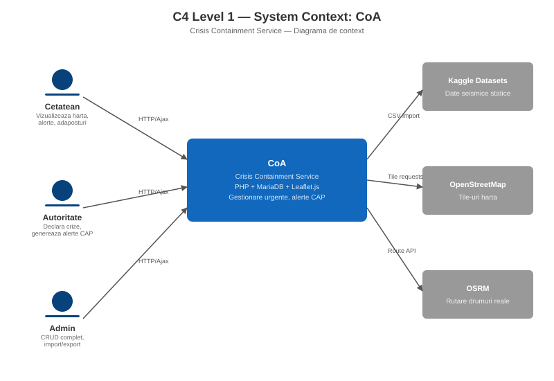
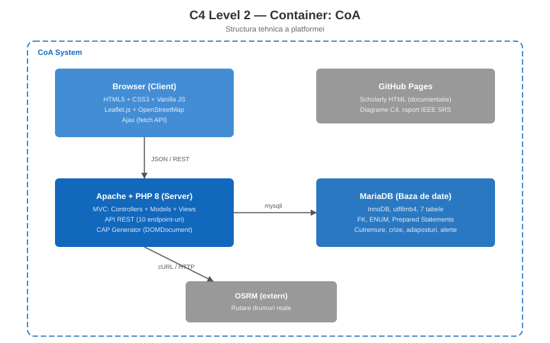
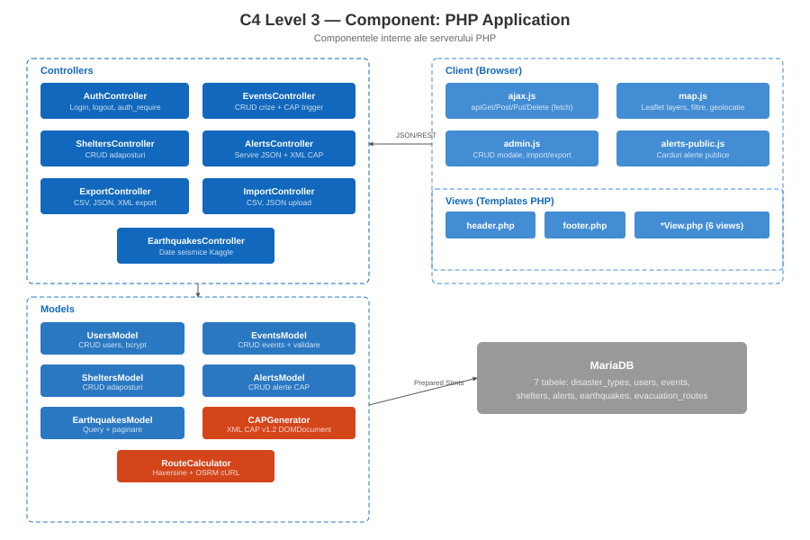

CoA — Crisis Containment Service
Raport tehnic conform IEEE System Requirements Specification
1. Introducere
1.1 Scop
Acest document specifica cerintele functionale si nefunctionale ale platformei Web CoA, dezvoltata in cadrul disciplinei Tehnologii Web. Aplicatia permite autoritatilor sa declare si sa gestioneze situatii de urgenta, iar cetatenilor sa vizualizeze informatii despre evenimentele active, adaposturile disponibile si rutele de evacuare.
1.2 Sfera de aplicare
Platforma acopera trei scenarii principale de calamitate: cutremure (EQ), incendii (FIRE) si inundatii (FLOOD). Sistemul integreaza date publice despre cutremure din doua surse Kaggle (Global Earthquake Events si Earthquakes in Romania), genereaza alerte conforme cu Common Alerting Protocol v1.2 (OASIS), si ofera vizualizare cartografica prin Leaflet.js cu OpenStreetMap.
1.3 Referinte
- OASIS, Common Alerting Protocol Version 1.2, 01 July 2010 — CAP-v1.2-os.html
- W3C, Scholarly HTML — w3c.github.io/scholarly-html
- IEEE, System Requirements Specification Template — IEEE-SRS-Template
- OWASP, SQL Injection — owasp.org
- OWASP, Cross Site Scripting (XSS) — owasp.org
2. Descriere generala
2.1 Perspectiva produsului
CoA este o aplicatie Web autonoma care ruleaza pe un server Apache cu PHP si MariaDB. Nu depinde de framework-uri externe (nici pe server, nici pe client). Arhitectura este bazata pe servicii Web REST, cu interfata de client construita in HTML5, CSS3 si Vanilla JavaScript.
2.2 Tipuri de utilizatori
| Rol | Descriere | Permisiuni |
|---|---|---|
user (cetatean) |
Utilizator public, eventual inregistrat | Vizualizare harta, evenimente active, adaposturi, rute de evacuare, alerte publice CAP (read-only) |
authority (autoritate) |
Reprezentant al autoritatilor competente | Toate permisiunile de user, plus declararea crizelor noi cu generare automata de notificari CAP, editarea si anularea crizelor existente |
admin (administrator) |
Administratorul platformei | Toate permisiunile de authority, plus CRUD complet pe adaposturi, utilizatori si alerte; import si export date in formatele CSV, JSON si XML CAP |
2.3 Constrangeri de implementare
- PHP fara framework (cerinta profesorului)
- Fara framework-uri JavaScript pe client (Vanilla JS)
- Arhitectura obligatoriu bazata pe servicii Web REST, cu apeluri asincrone Ajax
- HTML valid W3C si CSS valid (verificare cu Stylelint)
- Prevenirea SQL Injection si Cross Site Scripting
- Design Web responsiv
3. Surse de date
3.1 Date seismice statice (Kaggle)
Datele despre cutremure sunt importate o singura data in baza de date prin scriptul CLI
scripts/import_earthquakes.php. Importul detecteaza automat coloanele din CSV,
proceseaza in tranzactii batch de 1000 de randuri si marcheaza cutremurele din Romania
cu country = 'RO'.
| Dataset | Sursa | Continut |
|---|---|---|
| Global Earthquake Events | Kaggle | Cutremure la nivel mondial: coordonate, magnitudine, adancime, data |
| Earthquakes in Romania 2012–2024 | Kaggle | Cutremure din Romania cu aceleasi atribute, marcate cu country = 'RO' |
3.2 Alerte CAP (generate intern)
Alertele sunt generate automat la declararea crizelor de catre autoritati, conform
standardului Common Alerting Protocol v1.2.
XML-ul este construit cu DOMDocument din PHP, folosind namespace-ul
urn:oasis:names:tc:emergency:cap:1.2. Fiecare alerta contine: identifier,
sender, sent, status, msgType, scope, category, event, urgency, severity, certainty,
description, instruction, area (areaDesc + circle).
3.3 Harti (OpenStreetMap + OSRM)
Vizualizarea cartografica foloseste Leaflet.js cu tile-uri OpenStreetMap. Rutele de evacuare sunt calculate prin serviciul OSRM (Open Source Routing Machine), cu fallback pe linie dreapta cand serviciul nu raspunde.
4. Functionalitati ale sistemului
4.1 Harta interactiva
Pagina map.php afiseaza o harta Leaflet centrata pe Romania cu 5 layer groups
comutabile independent: cutremure istorice (markere colorate pe magnitudine), evenimente/crize
active (cu zone afectate de 10 km desenate ca cercuri dashed), adaposturi (markere colorate
pe tip de calamitate), rute de evacuare (calculate automat prin OSRM catre cele mai
apropiate 3 adaposturi), si locatia utilizatorului (prin API-ul de geolocatie al browserului).
Un dropdown permite filtrarea simultana a evenimentelor si adaposturilor pe tipul de calamitate
(cutremur, incendiu, inundatie). Toate popup-urile sunt construite cu DOM elements
(textContent) pentru prevenirea XSS.
4.2 Declararea crizelor si generarea alertelor CAP
Utilizatorii cu rol authority sau admin pot declara crize noi
din pagina Dashboard. La fiecare declarare, se genereaza automat un document XML CAP v1.2
cu instructiuni diferentiate pe tip de calamitate si severitate. Ciclul complet al unei
crize este: creare (Alert) → editare (Update) → anulare (Cancel) → reactivare (Alert).
Urgenta (urgency) si severitatea (severity) sunt dimensiuni separate
conform specificatiei CAP: urgenta indica cat de repede trebuie actionat, severitatea indica
intensitatea impactului.
4.3 Pagina publica de alerte
Cetatenii pot vizualiza alertele active pe pagina alerts.php, fara autentificare.
Fiecare alerta este afisata ca un card cu badge (Alert/Cancel), informatii despre severitate
si urgenta, si un buton pentru vizualizarea XML-ului CAP brut.
4.4 CRUD adaposturi, utilizatori si alerte
Panoul de administrare (admin.php) ofera 6 tab-uri: Adaposturi, Crize,
Utilizatori, Export, Import si Alerte. Toate operatiile CRUD se efectueaza prin Ajax
fara reincarcarea paginii, cu modale construite din DOM elements.
4.5 Import si export date
Exportul suporta 3 formate: CSV (cu BOM UTF-8 pentru compatibilitate Excel), JSON (pretty-printed cu diacritice nealterate) si XML (consolidat, cu toate alertele CAP). Importul din interfata Web accepta fisiere CSV si JSON pentru adaposturi, evenimente si cutremure, cu validare de format, dimensiune (max 5 MB) si deduplicare.
4.6 Rute de evacuare
Pentru fiecare eveniment activ, sistemul calculeaza automat rute de evacuare catre cele mai apropiate 3 adaposturi folosind formula Haversine pentru distanta si serviciul OSRM pentru rutare pe drumuri reale. Rezultatele includ geometria rutei, distanta in km si durata estimata. Daca OSRM nu raspunde, se deseneaza o linie dreapta ca fallback.
5. Cerinte nefunctionale
5.1 Securitate
SQL Injection: Toate query-urile catre baza de date folosesc Prepared Statements
(prepare() + bind_param()). Un audit complet al tuturor fisierelor
din models/ confirma zero concatenari de variabile in SQL.
Cross Site Scripting (XSS): Toate valorile dinamice afisate in HTML folosesc
htmlspecialchars($var, ENT_QUOTES, 'UTF-8'). Pe partea de client, popup-urile
de pe harta si cardurile de alerte folosesc textContent si DOM elements.
Protectie foldere: Fisierele .htaccess cu Require all denied
blocheaza accesul direct la config/, models/, views/
si logs/. Compatibilitate Apache 2.2 si 2.4.
Sesiuni: Cookie-urile de sesiune au flagurile httponly si
samesite=Strict. La login se apeleaza session_regenerate_id(true)
pentru prevenirea session fixation.
5.2 Performanta
Datele seismice sunt importate o singura data si interogate cu paginare si filtrare pe server. Harta incarca adaposturile o singura data si le filtreaza local. Rutele OSRM au timeout de 10 secunde cu fallback pe linie dreapta.
5.3 Design responsiv
CSS-ul defineste 3 breakpoints: mobil (<600px cu hamburger menu si layout vertical),
tableta (600-1024px cu grid pe 2 coloane) si desktop (>1024px). Layoutul foloseste
CSS Grid si Flexbox cu auto-fit si minmax() pentru adaptare
fluida.
5.4 Compatibilitate browser
Aplicatia foloseste fetch() (suportat in toate browserele moderne),
var in loc de let/const in JavaScript pentru compatibilitate
extinsa, si CSS Variables cu fallback-uri.
6. Arhitectura
6.1 Modelul MVC
Aplicatia urmeaza arhitectura Model-View-Controller fara framework:
- Models (
models/) — functii PHP care interactioneaza cu baza de date prin Prepared Statements. Fiecare entitate are propriul model:UsersModel,EventsModel,SheltersModel,EarthquakesModel,AlertsModel,CAPGenerator,RouteCalculator. - Controllers (
controllers/) — logica de business, validare input, verificare roluri, formatare raspunsuri JSON. Includ:AuthController,EventsController,SheltersController,AlertsController,EarthquakesController,ExportController,ImportController. - Views (
views/) — template-uri PHP cu layout comun (partials/header.phpsipartials/footer.php) si view-uri specifice (EventsView,SheltersView,DashboardView,AdminView,MapView,AlertsView).
6.2 API-uri REST
Toate endpoint-urile din api/ sunt servicii Web REST cu routing pe REQUEST_METHOD:
| Endpoint | GET | POST | PUT | DELETE |
|---|---|---|---|---|
api/events.php | Public | Authority+ | Authority+ | Admin |
api/shelters.php | Public | Admin | Admin | Admin |
api/earthquakes.php | Public | — | — | — |
api/alerts.php | Public | — | — | Admin |
api/alert_xml.php | Public | — | — | — |
api/disaster_types.php | Public | — | — | — |
api/users.php | Admin | Admin | Admin | Admin |
api/export.php | Admin | — | — | — |
api/import.php | — | Admin | — | — |
api/route_auto.php | Public | — | — | — |
Toate GET-urile returneaza format uniform {"data": [...], "total": N}.
Toate POST/PUT/DELETE cu sesiune insuficienta returneaza JSON cu status 401 sau 403.
6.3 Schema bazei de date
Baza de date MariaDB foloseste engine InnoDB cu charset utf8mb4 si contine
7 tabele cu chei straine: disaster_types, users, events,
shelters, alerts, earthquakes si evacuation_routes.
Campuri ENUM sunt folosite pentru role, severity, urgency,
status si msg_type.
6.4 Diagrame C4



7. Motivatii de design
7.1 De ce PHP fara framework
Cerinta cursului impune implementarea fara framework-uri. Acest lucru ne-a permis intelegerea
profunda a ciclului request-response HTTP, a managementului sesiunilor si a construirii manuale
a unei arhitecturi MVC. Am ales mysqli in locul PDO pentru acces direct la
functionalitati specifice MariaDB.
7.2 De ce Leaflet.js
Leaflet este o biblioteca open source (nu framework) de 42 KB, cu suport nativ pentru OpenStreetMap (gratuit, fara API key). A fost preferata fata de Google Maps API pentru absenta costurilor si pentru conformitatea cu cerinta de a folosi resurse open source.
7.3 De ce template-uri PHP (nu Twig/Blade)
Template-urile sunt fisiere PHP simple (header.php, footer.php,
*View.php) incluse cu require_once. Variabilele de pagina
($page_title, $current_page, $extra_js) sunt setate
in controller si consumate de template. Aceasta abordare respecta cerinta de a nu folosi
framework-uri, mentinand in acelasi timp principiul DRY.
7.4 De ce OSRM pentru rute
OSRM (Open Source Routing Machine) este un serviciu gratuit de rutare pe drumuri reale.
Am ales sa calculam rutele de evacuare dinamic (nu stocate static) deoarece adaposturile
si evenimentele se modifica in timp real. Rutele sunt calculate pe server (prin
RouteCalculator.php cu cURL) si pe client (prin fetch())
cu fallback pe linie dreapta in ambele cazuri.